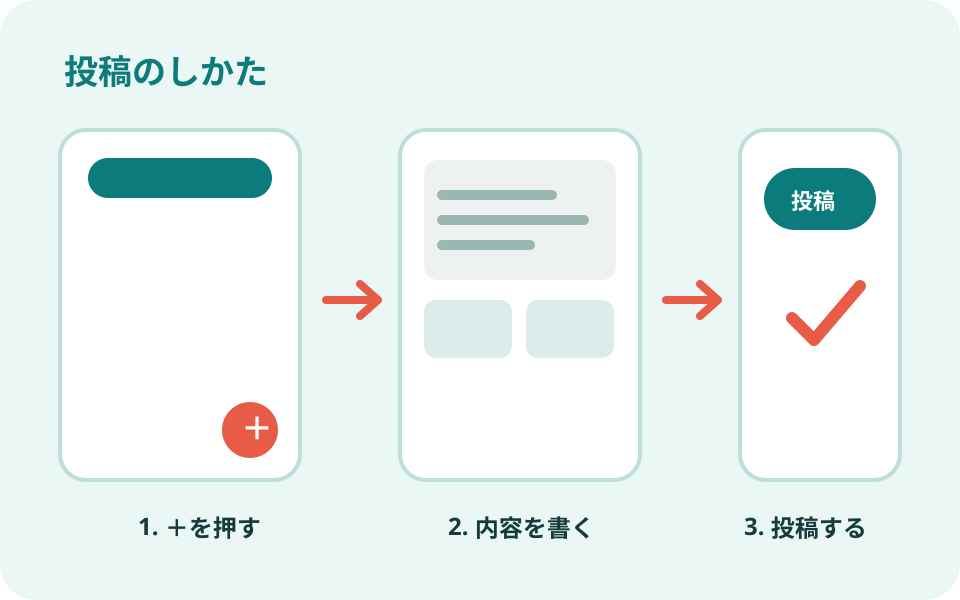
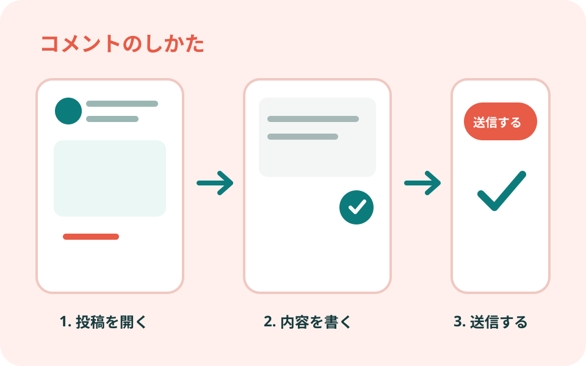

大人の小学校ナビ
やりたいことや困っていることを選ぶと、
ぴったりの案内が見つかります。
01
GETTING STARTED
まずは使い方を知りたい
動画FANTSの基本的な使い方↗
動画プロフィールの設定方法↗
図解投稿の方法

↗ 図解コメントの方法
↗ 動画通知設定について↗リンクイベントの探し方
リンクイベントへの参加方法
案内困ったときの問い合わせ先
動画Zoomの使い方を知る↗
参加レクチャーZoomに参加する↗
02
MEET NEW PEOPLE
新しい仲間・友人を作りたい
交流自己紹介をしてみる↗
準備中新入生専用の掲示板を見る
準備中同じ期の児童と交流する
参加淳校長のHRに参加する↗
探す興味のある公式クラブを探す↗
探す地域が近い人と交流する↗
準備中趣味が近い人と交流する
参加オフラインイベントに参加する↗
準備中オンラインで話す
03
TRY SOMETHING NEW
何かに挑戦・活動したい
04
ENJOY SCHOOL LIFE
大人の小学校をもっと楽しみたい
楽しむたむポを貯める↗
楽しむたむポを使う↗
準備中耳クラを聞く
準備中耳クラにお便りを送る
準備中選手権に参加する
見る校長・教頭・先生の部屋を見る↗
作るスタンプを作る↗
見る大人の小学校 児童マップを見る↗